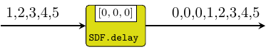

| Copyright | (c) George Ungureanu KTH/EECS/ESY 2018-2020 |
|---|---|
| License | BSD-style (see the file LICENSE) |
| Maintainer | ugeorge@kth.se |
| Stability | experimental |
| Portability | portable |
| Safe Haskell | Safe |
| Language | Haskell2010 |
ForSyDe.Atom.MoC.SDF.SADF
Description
The SADF library implements a DSL of atoms operating according to the
scenario-aware dataflow model of computation, in terms of the atoms of
ForSyDe.Atom.MoC.SDF. As such SADF patterns are operating on
SDF signals, i.e. they have the exact same time semantics,
hence there is no need for MoC interfaces between these two MoCs. Also mixing the
two kinds of processes is considered legal, as SADF is simply an extension of SDF.
SADF is one of the more recent attempts to increase the expressivity of the SDF MoC by adding the possibility to describe dynamic behaviors in a way that still maintains high analyzability for its process networks, like its predecessor. For more details on the SADF MoC and its uses, please consult [Stuijk11]. In short, SADF defines two types of actors:
- detectors: are Mealy-like finite state machines (i.e. react immediately) that input signals carrying data tokens and, based on the input status, produce "control tokens" on their output signals.
- kernels: are combinational processes that input one control signal and (possibly many) data signals and during a firing consumes one control token and, based on it, it adapts its behavior accordingly. The behavior adaptation can be seen in the consumption rate, production rate, process function, or any cobination of these three.
ForSyDe-Atom takes advantage of the host paradigm, where functions are first-class
citizens and can be passed as values, and implements control tokens as the actual
behavior parameters passed to a process (i.e. a triple containing the consumption
rate, the production rate and the process function). The applicative mechanism
enabling such execution schema is similar to the one depicted for
reconfig22. For a detailed description of their
implementation in ForSyDe as well as comprehensive examples please consult
[Bonna19].
Useful pointers:
- ForSyDe.Atom contains general guidelines for using the API
- ForSyDe.Atom.MoC.SDF defines the synchronous dataflow MoC.
- the naming convention rules on how to interpret the function names based on their number of inputs and outputs.
Synopsis
- type Signal a = Stream (SDF a)
- type Prod = Int
- type Cons = Int
- signal :: [a] -> Signal a
- delay :: [a] -> Signal a -> Signal a
- kernel22 :: Signal ((Cons, Cons), (Prod, Prod), [a1] -> [a2] -> ([b1], [b2])) -> Signal a1 -> Signal a2 -> (Signal b1, Signal b2)
- detector22 :: (Cons, Cons) -> (s -> [a1] -> [a2] -> s) -> (s -> ((Prod, [y1]), (Prod, [y2]))) -> s -> Signal a1 -> Signal a2 -> (Signal y1, Signal y2)
Demonstrative example
Below is an example to demonstrate the usage of the SADF MoC: a high-level
model of a RISC processor. In this model the instruction decoder is described as
a SADF detector decDetector which dynamically adapts the shape of the proces
network and its functionality depending on the type of instruction fetched
(e.g. branch, operation, terminal output, etc.). The instruction fetch and
execution unit are implemented as a kernel each ifKernel and exeKernel
respectively, whose execution parameters are controlled by the decoder. The code
below is a simplification of the example presented in
[Bonna19], with less instructions and no programmable
memory, only registers.
Each of the kernels has a self-loop (not shown in the picture) modeling their
state: ifKernel has one for modeling its program counter; exeKernel has one
for modeling the register set. Notice that the feedback loop between ifKernel
and exeKernel (and the ones derived) has no initial token, yet as seen in the
simulations, it does not deadlock. This is because all scenario graphs infered by
the detector are causal. More exactly, the two channels involved in this loop are
mutually exclusive.
import ForSyDe.Atom
import ForSyDe.Atom.MoC (takeS)
import ForSyDe.Atom.MoC.SDF.SADF
import ForSyDe.Atom.Skel.Vector as V
type StateDEC = Int -- state decoder
type Instr = (Op, [Arg]) -- instruction type (operation, args)
type Arg = Integer -- numerical arguments
type Op = String -- operation name
type PC = Integer -- program counter
type Reg = Arg -- register
---------------------------------------------------------
-- Instruction Fetch (IF) Kernel
---------------------------------------------------------
type ScenarioIF = ( (Cons, Cons), (Prod, Prod, Prod)
, [Arg] -> [PC] -> ([Op], [[Arg]], [PC]) )
ifScenario :: StateDEC -> ScenarioIF
ifScenario n
| n > 9 || n < 0 = error "ifScenario: Non existent scenario"
| n >= 6 && n < 9 = -- branch
((1,1), (1,1,1), \[a] [pc] -> ([op program (pc+a)], [arg program (pc+a)], [pc+a+1]))
| otherwise = -- no branch
((0,1), (1,1,1), \_ [pc] -> ([op program pc], [arg program pc], [pc+1]))
where arg mem i = snd $ mem <@! i
op mem i = fst $ mem <@! i
ifKernel :: Signal ScenarioIF -> Signal Arg -> (Signal Op, Signal [Arg])
ifKernel ifCt sigBr = (sigOp, sigArg)
where (sigOp, sigArg, sigPc) = kernel23 ifCt sigBr sigPc'
sigPc' = delay [1] sigPc
---------------------------------------------------------
-- Execute (EXE) Kernel
---------------------------------------------------------
type ScenarioEXE = ( (Cons, Cons), (Prod, Prod, Prod)
, [[Arg]] -> [Vector Reg] -> ([Arg], [Arg], [Vector Reg]))
exeScenario :: StateDEC -> ScenarioEXE
exeScenario 0 = ((1,0), (0,0,0), \_ _ -> ([], [], [])) -- nop
exeScenario 1 = ((1,1), (0,0,1), \[[rd, rs]] [r] -> ([], [], [replace rd (r <@! rs) r])) -- mov
exeScenario 2 = ((1,1), (0,0,1), \[[rd, i]] [r] -> ([], [], [replace rd i r])) -- movi
exeScenario 3 = ((1,1), (0,0,1), \[[rd, rs]] [r] -> ([], [], [replace rd ((r <@! rd) + (r <@! rs)) r])) -- add
exeScenario 4 = ((1,1), (0,0,1), \[[rd, rs]] [r] -> ([], [], [replace rd ((r <@! rd) - (r <@! rs)) r])) -- sub
exeScenario 5 = ((1,1), (0,0,1), \[[rd, rs]] [r] -> ([], [], [replace rd ((r <@! rd) * (r <@! rs)) r])) -- mul
exeScenario 6 = ((1,1), (1,0,1), \[[rs, v]] [r] -> ([if r <@! rs == 0 then v else 0], [], [r])) -- bez
exeScenario 7 = ((1,1), (1,0,1), \[[rs, v]] [r] -> ([if r <@! rs > 0 then v else 0], [], [r])) -- bgz
exeScenario 8 = ((1,0), (1,0,0), \[[v]] _ -> ([v], [], [])) -- jmp
exeScenario 9 = ((1,1), (0,1,1), \[[rs]] [r] -> ([], [r <@! rs], [r])) -- printf
exeScenario _ = error "exeScenario: Non existent scenario"
exeKernel :: Signal ScenarioEXE -> Signal [Arg] -> (Signal Arg, Signal Arg)
exeKernel exeCt sigArg = (sigBr, sigPrf)
where (sigBr, sigPrf, sigReg) = kernel23 exeCt sigArg sigReg'
sigReg' = delay [fanoutn 32 0] sigReg
---------------------------------------------------------
-- Decode Detector
---------------------------------------------------------
type ScenarioDEC = ((Prod,[ScenarioIF]), (Prod,[ScenarioEXE]))
decScenario :: StateDEC -> ScenarioDEC
decScenario n = ((1,[ifScenario n]), (1,[exeScenario n]))
decState :: StateDEC -> [Op] -> StateDEC
decState _ ["nop"] = 0
decState _ ["mov"] = 1
decState _ ["movi"] = 2
decState _ ["add"] = 3
decState _ ["sub"] = 4
decState _ ["mul"] = 5
decState _ ["bez"] = 6
decState _ ["bgz"] = 7
decState _ ["jmp"] = 8
decState _ ["printf"] = 9
decState _ _ = error "decState: Input not recognized"
decDetector :: Signal Op -> (Signal ScenarioIF, Signal ScenarioEXE)
decDetector = detector12 1 decState decScenario 0
---------------------------------------------------------
-- RISC Model: Process Network
---------------------------------------------------------
riscSADF = sigPrintf
where (sigBr, sigPrintf) = exeKernel exeCt sigArg
(sigOp, sigArg) = ifKernel ifCt' sigBr
(ifCt, exeCt) = decDetector sigOp
ifCt' = delay [ifScenario 0] ifCt
---------------------------------------------------------
-- TEST Program
---------------------------------------------------------
program = vector
[ ("movi", [1,100])
, ("movi", [2,20])
, ("printf", [1])
, ("sub", [1,2])
, ("printf", [1])
, ("bgz", [1,-3])
, ("jmp", [-7])
]
If you copy-paste the code above in a new hs file and load it in the
interpreter, yout can test the demo program with
> takeS 10 riscSADF
{100,80,60,40,20,0,100,80,60,40}Re-Exported from SDF
These constructors and utilities are re-exported from ForSyDe.Atom.MoC.SDF for convenience.
signal :: [a] -> Signal a Source #
Transforms a list of values into a SDF signal with only one partition, i.e. all events share the same (initial) tag.
The delay process "delays" a signal with initial events built
from a list. It is an instantiation of the delay
constructor.
>>>let s = signal [1,2,3,4,5]>>>delay [0,0,0] s{0,0,0,1,2,3,4,5}

SADF processes
Arguments
| :: Signal ((Cons, Cons), (Prod, Prod), [a1] -> [a2] -> ([b1], [b2])) | control signal |
| -> Signal a1 | data signal |
| -> Signal a2 | data signal |
| -> (Signal b1, Signal b2) | output data signals |
A SADF kernel process takes a control signal and one or many data signals and changes its behavior according to the control tokens. In ForSyDe-Atom the control tokens are in fact the behavior parameters: the consumption rate, the production rate and the process function.
Constructors: kernel[1-4][1-4].
>>>let s1 = signal [1..]>>>let sf = signal [(3,1,(:[]).sum), (3,3,id), (2,1,(:[]).sum), (2,2,id)]>>>kernel11 sf s1{6,4,5,6,15,9,10}

Arguments
| :: (Cons, Cons) | consumption rates for input data signals |
| -> (s -> [a1] -> [a2] -> s) | next state functions |
| -> (s -> ((Prod, [y1]), (Prod, [y2]))) | scenario selection function |
| -> s | initial state |
| -> Signal a1 | data signal |
| -> Signal a2 | data signal |
| -> (Signal y1, Signal y2) | control signals |
A detector is a finite state machine that consumes data tokens (like a regular SDF process) and produces control signals for kernel processes. The type of the output must match the signature of the kernel processes downstream. The state machine reacts instantaneously, meaning that it first changes the state and then it decodes the scenario based on the new state.
Constructors: detector[1-4][1-4].
>>>let ns s [i] = if odd i then 1 else 0>>>let od s = if s == 0 then (1,[(1,1,id)]) else (1,[(1,0,\_->[])])>>>let det = detector11 1 ns od 0>>>let s1 = signal [1..10]>>>kernel11 (det s1) s1{2,4,6,8,10}